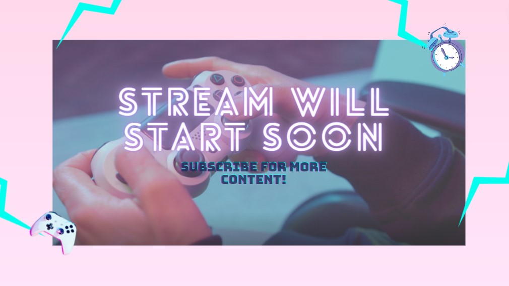

First Stream's Outline
|. Planning Out/Organizing the Decided Data
- Content
-
Our streams content will be a gaming stream and podcast wherein we will entertain our viewers by gaming and talking about the gaming issues revolving around the study in the relationship between gaming and procrastination. An analysis on how gaming impacts academic, personal and social performance by delaying students from academic assignments.
- Purpose
-
Our goal is to educate and inform our target audience which are gamer students to be aware of the dangers and limits of excessive gaming in an online environment as this may effect social, academic and personal performances.
- Streaming Content Type
-
Taking our target audience and the survey result on their preferred content type into consideration, we have chosen Informative Video; includes factual and reliable information and is engaging to the audience. Additionally It's a content type that is versatile meaning we can create a flexible and fun script while providing our viewer's wants, needs and a lot more topics. Our audience's needs also help us form a far more engaging stream; as it makes our stream constructed to their liking.
- Streaming Platform
-
We have also decided that the most appropriate streaming platform for our topic, content type, target audience and how well our content is likely to spread awareness is YouTube. It is a streaming platform that is used frequently by students to help guide or educate them; they use it to gain information—generally focusing on the educational aspect. This platform is also accessible to teenagers or students; our target audience. Plus, It's a high quality streaming platform which means we can get feedback and we can connect and engage with our audience.
- Computer
- Camera
- Microphone
- Live Streaming Software:
OBS studio: Open Broadcaster Software Studio - Lighting
- Good Internet Connection
||. Stream Design
We're excited to share some of our planned overlays for the stream! Check out a glimpse of our fun graphic overlays you can expect during the stream.
Live Stream Overlays

|||. Streaming Outline
Default
| Time | Topic | Activity | Duration | Screen | Audio |
|---|---|---|---|---|---|
| 4:00pm-4:05pm | Starting Soon | Recheck the prepared needed equipments/tools, dicussion topic and games | 5 Minutes | Starting Soon Overlay | Calming Lofi Music Compilation |
| 4:05pm-4:10pm | Who are the streamers? | Greeting the audience and Introduction of streamer | 5 Minutes | Podcast Overlay | Camera/Microphone Audio |
| 4:10pm-4:20pm | Start of game and the introduction of the effect of gaming on procrastination | State experiences with how gaming effected their school works, their social life and their personal life | 10 Minutes | Game Overlay | Camera/Microphone Audio |
| 4:20pm-4:30pm | Gaming while Interacting or having a survey with our viewers on experiences on our topic | Asking questions for the chat to explain or type their experiences with procrastination due to gaming | 10 Minutes | Game Overlay | Camera/Microphone Audio |
| 4:30pm-5:00pm | Gaming & Debate on the topic | Discussion of our topic by providing experiences or facts about the effects of procrastination | 30 Minutes | Game Overlay | Camera/Microphone Audio |
| 5:00pm-5:10pm | Break | Give time for their viewers to think about the topic | 10 Minutes | Break Overlay | Camera/Microphone Audio |
| 5:10pm-5:30pm | Start Ending gaming/ Asking for Chats Opinion | Interact with chat, talk about the chat's views on the topic | 20 Minutes | Gaming to podcast Overlay | Camera/Microphone Audio |
| 5:30pm-5:50pm | Concluding the stream's topic | Concluding by stating that there are positive and negative effects of gaming and even if somethings have benefits, Everything becomes bad for you when you overdo it | 20 Minutes | Podcast Overlay | Camera/Microphone Audio |
| 5:50pm-5:30pm | End of Stream | Outro: Streamers will say goodbye to the audience for the day | 10 Minutes | stream has ended screen Overlay | Background Music: Calming/Lofi Music Playlist |